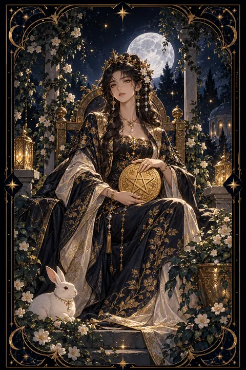

펜타클 여왕 카드 — 따뜻하게 돌보는 살림 솜씨
펜타클 여왕 카드 한눈에 보기
펜타클 여왕 카드 상징 읽기

동네보살의 카드 그림은 전통 라이더–웨이트 덱의 뜻을 새 그림으로 옮긴 것입니다. 아래 상징 설명은 전통 덱의 그림을 기준으로 합니다.
펜타클 여왕에는 꽃이 만발한 정원의 옥좌에 앉은 여왕이 무릎 위의 금빛 동전을 두 손으로 감싸 안은 채 고요히 내려다보고 있습니다. 동전을 품은 두 손은 물질을 소중히 다루고 가꾸는 돌봄의 태도를 보여 줍니다.
옥좌에 새겨진 염소 머리는 흙의 별자리인 염소자리를 뜻하며 현실 감각과 끈기를 나타냅니다. 함께 새겨진 과일과 아기 천사 장식은 풍요와 생명력을 상징합니다.
여왕의 머리 위로 드리운 장미 넝쿨과 무성한 초록 정원은 정성을 들인 만큼 자라나는 결실을 뜻합니다. 오른쪽 아래의 토끼는 다산과 풍요, 그리고 삶의 소박한 즐거움을 나타냅니다.
여왕은 멀리 떠나지 않고 자신이 가꾼 정원 한가운데 머물러 있습니다. 가까운 사람과 살림을 따뜻하게 돌보며 현실을 풍요롭게 만드는 힘이 이 카드의 핵심입니다.
펜타클 여왕 카드 정방향 뜻
정방향 펜타클 여왕은 따뜻한 돌봄과 현실적인 살림 솜씨가 함께 빛나는 시기를 뜻합니다. 가족과 주변 사람을 정성껏 챙기면서도 실속 있게 생활을 꾸려 가는 힘이 커집니다.
이 카드는 마음과 셈이 조화를 이룬 상태를 보여 줍니다. 알뜰하게 모으면서도 필요한 곳에는 넉넉히 베풀 줄 알아 주변에서 믿고 기대는 사람이 됩니다. 집을 가꾸거나 요리를 하는 등 손으로 생활을 풍요롭게 만드는 일에서 특히 기쁨을 느끼기 쉽습니다.
지금은 집과 살림을 정돈하고 가까운 사람과 따뜻한 시간을 나누기에 좋은 때입니다. 다만 남을 돌보는 만큼 자신에게도 같은 정성을 쏟아야 이 풍요가 오래 이어집니다. 스스로를 위한 휴식과 작은 즐거움을 일정에 넣어 두세요. 가까운 사람에게 음식을 나누는 작은 정성이 큰 복으로 돌아옵니다.
펜타클 여왕 카드 역방향 뜻
역방향 펜타클 여왕은 남을 향한 돌봄이 자신을 향한 돌봄을 밀어낸 상태를 보여 줍니다. 가족이나 주변 사람을 챙기느라 정작 자신의 몸과 마음을 돌보지 못해 지쳐 있을 수 있습니다.
일과 집안일 사이에서 어느 쪽도 만족스럽게 해내지 못한다는 자책이 커지는 때이기도 합니다. 걱정이 지나쳐 상대를 과하게 챙기면 오히려 부담을 줄 수 있습니다. 살림이 흐트러져 지출이 어디로 새는지 놓치기도 합니다.
지금은 돌봄의 방향을 잠시 자신에게로 돌리라는 신호입니다. 혼자 떠안은 일 가운데 나눌 수 있는 것을 가족에게 맡기고 자신만을 위한 시간을 확보해 보세요. 가계부를 다시 펴고 지출을 점검하면 살림의 중심도 되찾을 수 있습니다. 채워진 사람이 다시 넉넉하게 베풀 수 있습니다. 자신을 아끼는 일은 이기심이 아니라 오래 돌보기 위한 준비입니다.
연애에서 펜타클 여왕 카드
솔로라면 따뜻하고 배려 깊은 모습이 좋은 사람을 곁으로 부르는 때입니다. 함께 식사를 하거나 소소한 일상을 나누는 자리에서 호감이 자연스럽게 싹틉니다. 생활 감각이 비슷하고 안정감을 주는 사람과 잘 맞습니다.
곁에 연인이 있다면 서로를 아끼고 돌보는 편안한 관계가 이어집니다. 상대의 끼니를 챙기거나 필요한 것을 먼저 알아채는 세심함이 사랑을 깊게 만듭니다. 다만 한쪽만 계속 챙기는 관계가 되면 지치기 쉬우니 받는 것도 기쁘게 받아들이는 연습이 필요합니다. 함께 장을 보고 요리하는 시간처럼 일상을 나누는 순간이 두 사람을 단단하게 이어 줍니다. 편안함 속에서 천천히 자라는 신뢰야말로 여왕의 정원에 피는 가장 귀한 꽃입니다. 받은 정성에 고맙다는 말로 화답하면 여왕의 정원은 계절이 바뀌어도 푸르게 남습니다.
재회·속마음 질문에서 펜타클 여왕 카드
재회 질문에서 펜타클 여왕이 나오면 예전에 나누었던 따뜻한 배려와 편안함이 다시 이어질 실마리가 된다는 뜻입니다. 상대는 당신과 함께했던 안정감과 돌봄을 그리워하고 있을 수 있습니다. 다만 예전에 한쪽만 희생하는 관계였다면 같은 모습으로 돌아가는 것은 좋지 않습니다. 먼저 자신의 생활을 건강하게 가꾸고 마음의 여유를 되찾은 뒤 다가가 보세요. 부담 없는 안부나 작은 배려가 담긴 연락이 닫힌 마음을 부드럽게 여는 계기가 될 수 있습니다. 다시 만나게 된다면 돌봄을 주고받는 균형을 처음부터 함께 정해 두는 것이 좋습니다. 무엇보다 스스로를 먼저 아끼는 모습이 상대에게도 편안함을 줍니다.
일·금전에서 펜타클 여왕 카드
일과 직장에서는 사람을 돌보고 조율하는 능력이 빛나는 시기입니다. 동료를 세심하게 챙기면서도 실무를 꼼꼼하게 처리해 조직의 든든한 버팀목이 됩니다. 교육, 돌봄, 요리, 살림과 관련된 일이나 사람을 상대하는 업무에서 특히 능력이 돋보입니다. 일터에서도 집에서도 사람을 편하게 만드는 재주가 큰 힘이 됩니다.
금전 면에서는 살림을 알뜰하고 풍성하게 꾸리는 감각이 좋아지는 때입니다. 생활비 예산을 세우고 남는 돈은 저축으로 돌리는 습관을 이어 가세요. 식구를 위한 지출과 나를 위한 지출의 균형을 맞추면 살림이 더 넉넉해집니다. 장보기 목록과 식단을 미리 짜 두면 생활비가 눈에 띄게 줄어듭니다.
펜타클 여왕 카드는 예일까 아니오일까
현실 감각과 따뜻한 돌봄으로 안정을 이루는 카드라 긍정적인 예로 읽습니다. 살림과 가족, 관계에 관한 질문에 특히 잘 맞습니다. 역방향이라면 자기 자신을 먼저 돌본 뒤에야 일이 풀리므로 조건부입니다.
자주 묻는 질문
펜타클 여왕 카드 역방향은 나쁜 뜻인가요?
역방향 펜타클 여왕은 남을 향한 돌봄이 자신을 향한 돌봄을 밀어낸 상태를 보여 줍니다. 가족이나 주변 사람을 챙기느라 정작 자신의 몸과 마음을 돌보지 못해 지쳐 있을 수 있습니다.
펜타클 여왕 카드가 연애 질문에 나오면요?
솔로라면 따뜻하고 배려 깊은 모습이 좋은 사람을 곁으로 부르는 때입니다. 함께 식사를 하거나 소소한 일상을 나누는 자리에서 호감이 자연스럽게 싹틉니다. 생활 감각이 비슷하고 안정감을 주는 사람과 잘 맞습니다.
타로 카드는 어떻게 뽑나요?
타로 카드 페이지에서 78장을 섞으면 그중 22장이 펼쳐집니다. 마음이 가는 세 장을 고르면 과거·현재·미래 자리에 놓이고, 한 장씩 뒤집어 자리와 방향에 맞는 풀이를 읽습니다. 정방향과 역방향은 섞는 순간 정해집니다.